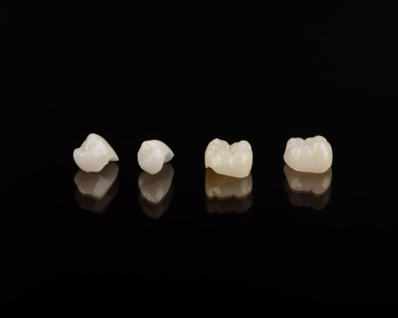
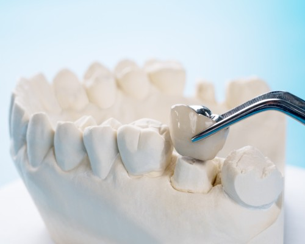

English
English
Zirkonyum Kaplama-Porselen Kaplama-E-max Kaplama- Diş Kaplama Fiyatları İstanbul
Atlantik Diş Kliniği İstanbul
Diş yapısında dayanıklılık, renkteki beyazlık ve dişte hassasiyet gibi durumlar zaman içerisinde değişebilir. Bu değişim yaşın ilerlemesi, düzensiz beslenme, bakım eksikliği, alkol ve sigara tüketimi, diş hekimi kontrollerinin aksatılması sonucunda oluşur. Bu şekilde değişime uğramış dişlere eski sağlıklı görünümünü kazandırmak için estetik müdahale gerekir.
Estetik diş cerrahisinde zirkonyum, lamine kaplama alanının en çok tercih edilen seçeneğidir. İnce bir plak şeklinde hazırlanan zirkonya kaplama, ortodonti kategorisinde uygulanır.
İstanbul zirkonyum kaplama nedir?
Beyaz renkte, ışık geçirgenliği olan, doğada yaygın biçimde bulunan bir elementtir. Zirkonyum, özel fırınlarda oksijenle birleştirilerek zirkonya kaplama seramiğine dönüştürülür.“Metal destekli ve desteksiz diş kaplama” şeklinde uygulanan porselen dişler, zaman içinde estetiklik algısında yaşanan değişme ile zirkonyum diş kaplama şeklinde kendini göstermiştir.
Kaplama neden tercih edilir? Zirkon diş kaplama özellikleri nelerdir?
Zirkonyum kaplama;
- Kırılmaya, çatlamaya ve aşınmaya karşı dayanıklı bir materyaldir,
- Ağızda metal tat bırakmaz,
- Biyo uyumluluğu yüksektir,
- Diş eti uyumu iyidir,
- Diş etlerinde grileşmeler, morarmalar yapmaz,
- Zirkonyum kaplama yapılmış dişlerin diş etlerinde görülen diş eti hastalıkları, metal kaplamalara göre çok daha düşüktür.
- Her renk dişe uygulanır,
- Zamanla sararma yapmaz ,
- Hiçbir alerjik reaksiyona sebebiyet vermez,
- Isı iletkenliği düşüktür,
- Dişlerde hassasiyet yapmaz,
- Dip plağı kolay kolay tutunamaz,
- Diş taşı oluşma ihtimali düşüktür
- İmplant üstü protezlerde uygulanabilir,
- Tek diş kaplamada veya köprü protezlerde kullanılabilir.
- Yüzeyi parlak ve pürüzsüzdür.
- Zamanla matlaşmaz.
- Bilmeyen biri görünüşüne bakarak diş kaplaması olduğunu kesinlikle anlayamaz.
- Uzun yıllar boyunca güvenle kullanılabilir.
- Sağlığa hiçbir zararı yoktur.
Bütün bu nedenlerle zirkonyum kaplama ideal diş kaplamamalzemesidir.
Diş kaplama nasıl yapılır?
- Klinik muayene yapılır. Hastanın ağız ve diş sağlığı kontrol Diş hekimi ihtiyaç duyarsa röntgen gibi görüntüleme yöntemlerine başvurur.
- >Lokal anestezi yapılır. Törpülenerek dişler küçültülür. Hastanın zirkonyum diş kaplama istediği dişlerinin ölçüsü yumuşak malzemelerle veya 3D dijital taramalar ile alınır. Bu işlem sırasında hasta herhangi bir ağrı hissetmez. Renk skalasıyla kişinin isteğine uygun diş rengi seçimi yapılır.Laboratuvara gönderilir.
- Zirkonyum kaplama diş / dişler hazırlanana kadar küçültülen dişlerde hassasiyet olmaması ve estetik görüntü için geçici kaplama dişler takılır.
- Yaklaşık 3-5 günde zirkonyum diş hazırlanır. Hazırlanan kaplama diş hasta tarafından onaylanınca geçici dişler çıkartılarak, zirkonyum kaplama diş yapıştırılır.
- Diş kaplama yapıştırıldıktan sonra yarım saat boyunca bir şey yenilip içilmemelidir.
- Hekim tarafından belirlenen tarihlerde düzenli diş kontrolü yapılmalıdır.
Zirkonyum diş kaplama yöntemi kliniğimizde uzman diş hekimleri tarafından gerçekleştirilmektedir. Hemen randevu almak için telefon numaralarımızdan bize ulaşabilir ya da ilk muayene için kliniğimizde bizi ziyaret edebilirsiniz.
Zirkonyum kaplama yaptıranlar kimlerdir?
Dişlerinin görüntüsünden hoşlanmayan, daha estetik bir gülüş isteyen her birey zirkonyum kaplama yaptırabilir.Bunun dışında dişkaplama yaptıranlar, şu özelliklere sahiptir:
- Çeşitli nedenlerde renk değişikliğine uğramış dişleri olanlar,
- Beyazlatma işleminden sonuç alınamamış dişleri olanlar,
- Çürük dişleri olanlar,
- Çarpık dişleri olanlar,
- Diş araları ayrık (diastema) olan dişleri olanlar,
- Travma ile kırılmış dişleri olanlar,
- Uzun köprü işlemi gerektiren dişleri olanlar,
- İmplantlarının üstünün porselen ile kapatılmasını isteyenler,
- Metal diş kaplama türüne karşı alerjisi bulunan kişiler,
- Eksik dişleri olanlar,
- Normalden kısa dişler olanlar,
- Diş eti çekilmesinden dolayı estetiği bozulmuş dişleri olanlar,
- Arka grup dişlerde kaplama veya köprüsü olanlar,
- Ön grupta implant üstü protez dişleri olanlar,
- Estetik görünmeyen dolgulu dişleri olanlar,
- Kuron, köprü yapılmış dişleri olanlar.
Diş ömrü ne kadar?
Zirkonyum diş kaplama ömrü kişiden kişiye değişir.Bazı kişiler 5-10 yıl kullanırken, bazı kişiler ömür boyu kullanır. Düzenli diş hekimi muayenesi yaptıran, ağız ve diş sağlığına dikkat eden kişiler çok uzun yıllar zirkon kaplama dişlerini kullanabilir.
İyi bir kullanımla yapılan diskaplama işlemi ile 30 yıl kadar zirkonyum kaplamalarınızı kullanabilirsiniz.
Diş kaplama işleminden sonra nelere dikkat edilmelidir?
- Diş hekiminizin tavsiyelerine dikkate edilmeli,
- Geceleri diş gıcırdatma alışkanlığı olanlar gece plağı kullanmalı,
- Dişler ile bir şey koparılmaya, kesilmeye çalışılmamalı, kutu kapağı açılmamalı, kalem gibi sert cisimler ısırılmamalı,
- Sert kabuklu kuru yemişler dişler ile kırılmamalı,
- Çekirdekli meyveleri (vişne, kiraz vb) yerken dikkatli olunmalı
- Sakız, macun vb esnek, uzayabilen, yapışkan, şekerli gıdalar; asitli içecekler tüketmemeye özen gösterilmeli,
- Ağız ve diş sağlığı için gerekli bakım aksatılmadan itina ile yapılmalı,
- Yılda iki kez diş kontrolü yaptırılmalı,
- Dövüş ya da kontak sporları yapan bireyler, diş koruyucu kullanılmalıdır.
İstanbul zirkonyum diş kaplama sık sorulan sorular
Zirkonyum kaplama fiyatları için hastalar ortalama bir maliyetle karşılaşacaktır. Çünkü zirkonyum diş kaplama fiyatları, kaplamanın uygulanacağı diş adedine, uygulanacak bölgeye, doktorun tecrübesine, doktorun kullanacağı ve hastanın ihtiyacı olan malzemelere, malzemelerin ithal edildiği durumlarda dolar/ euro kurlarına, kaplama için kullanılacak malzemenin kalitesine göre farklılıklar gösterir. Zirkon kaplama metal içerikli kaplamalara kıyasla daha pahalı olabilir. Diş kaplama fiyatları konusunda kesin bilgi alabilmek için bizimle iletişime geçiniz. İlk muayenenizi olup hemen tedaviye başlamak için bizi ziyaret edebilirsiniz.
Zirkonyum kaplama yaş sınırı yoktur. Gelişim çağını tamamlamış bireylerde zirkonyum kaplama tedavisi rahatlıkla uygulanabilir. 18 yaşını doldurmamış gelişim çağındaki bireylerde ise çene gelişimi hala devam ettiğinden, gelişim tamamlanana kadar zirkonyum tedavisi yapılmamalıdır.
Diş kaplama tedavilerinde birçok farklı materyal kullanır. Yaprak diş tedavisi, porselen kaplama ya da protez gibi birbirinden farklı uygulamalar, son yıllarda popülerliğini zirkonyum diş kaplamaya bırakmıştır. Diğer diskaplama yöntemlerine kıyasla zirkon kaplama, yapısı sayesinde en ideal kaplama diş yöntemidir. Renk tonlarının doğal diş ile uyumluluğu, dokusunun doğallığı, ışık geçirgenliği, dayanıklılığı zirkonyum diş kaplamayı diğer kaplama tedavilerden üstün kılmaktadır.
Zirkonyum kaplama ve lamine kaplama arasındaki fark, temel olarak uygulandıkları yüzey farklılığıdır. Zirkonyum kaplama, dişi tamamen sararken lamine kaplama ise dişlerin sadece ön yüzeyine uygulanır. Lamine kaplamada diş az miktarda inceltilir. Yaprak porselen şeklinde her diş için ayrı ayrı uygulama yapılır.
- Zirkonyum kaplama ile metal kaplama arasındaki fark, uygulanan porselenin destek malzemesindeki farktır. Zirkonyum diş kaplamada porselenin altında zirkonyum malzemesi, metal kaplamada ise porselenin altında metal bulunur.
- Zirkonyum kaplama, ışığı geçirdiği için dişler doğal görünümündeki gibi parlak dururken, metal kaplamalarda porselenin mat beyaz bir görünüm vardır
- Zirkonyum kaplamalar diş etiyle uyumludur, diş eti sağlığına katkıda bulunur. Metal kaplamalar diş etine uyumlu değildir. Bu nedenle diş etinde çekilme ve morarma yapar.
- Zirkon kaplama alerjik reaksiyon yapmazken, metal kaplama yapabilir.
- Metal kaplamada tat bozukluğu, ağızda metal tadı ve ağız kokusu görülürken, zirkonyum kaplamalarda bunlar görülmez.
- Metal destekli kaplama yaptıran hastaların en büyük sıkıntılardan biri sıcağa karşı hassasiyettir. Zirkon kaplama yaptıranlarda sıcak soğuk hassasiyeti görülmez.
- Sigara, kahve ve dişlerde leke bırakan diğer maddeler, metal destekli kaplamalarda dişlerin sararmasına yol açarken zirkonyum diş kaplamada bu şekilde renk değişikliği olmaz.
İstanbul porselen diş kaplama tedavisi
Günümüzde, diş tedavilerinde yaygın bir şekilde kullanılan yöntemlerden biride, diş kaplama(kuron) uygulamasıdır. Bu tedavi uygulaması, çeşitli nedenlerle hasar gören ve önemli derecede madde kaybına uğrayan, estetik ve fonksiyonel açıdan yapısı bozulan dişin tekrar eski haline getirilmesi için yapılan onarım işlemidir. Hasar gören dişin ya da dişlerin üzerlerinin tamamen kapanacak biçimde, diş şeklindeki materyaller ile kaplanması uygulamasıdır. Dişe herhangi bir zararı olmayan bu onarıcı işlem, hasar gören dişe şekil, boyut ve dayanım gibi özelliklerin tekrar kazandırılarak, hem fonksiyonel hem de estetik açıdan dişin eski haline getirilmesi durumudur.
Porselen diş kaplama nedir?
Diş kaplamasıyla, dişimizin görünen yeni kısmı oluşturulmuş olur. Bu nedenle genellikle dişlerin estetik özelliğini de korumak amacıyla, diş kaplama malzemesi olarak porselen diş kaplamaları sıklıkla tercih edilir. Diş tedavisi uygulamalarında oldukça yaygın bir biçimde kullanılan porselen kaplamalar, diğer kaplamalara göre farklı avantajlara da sahiptir. Porselen diş kaplamaları, dişlere estetik bir görüntü ve güzel bir gülüş sağlamasının yanında, dişin işlevsel yapısının yeniden kazanılmasına da imkân veren bir kaplama çeşididir. Diş kaplama tedavisinde oldukça yaygın şekilde kullanılan porselen diş kaplamaları, alt parça ve üst parça olmak olarak temelde iki kısımdan oluşur Alt parçayı oluşturan kısımlar genelde metal(altın, platin vb.) veya porselen malzeme olurken, üst parçayı oluşturan malzemeler sadece porselenden yapılmaktadır. Her hasta için özel olarak tasarlanan ve üretilen porselen kaplama ile dişe doğal bir görünüm kazandırılmış olur. Porselen diş kaplama doğal bir diş görünüşü için çok iyi bir tercihtir. Bu nedenle gülüş tasarımı uygulamalarında oldukça sık bir şekilde tercih edilmektedir.
Porselen kaplama dişin avantajı nedir?
Porselen kaplama dişin, bazı avantajları şöyle sıralanabilir:
- Porselen diş kaplaması, son derece dayanıklı bir malzemeden yapıldığı için, uzun süreler sorunsuz bir şekilde kullanım imkânı sağlamaktadır.
- Porselen diş kaplamasıyla, dişin işlevsel yapısının tekrar kazanılmasının yanında, estetik bir görünümde kazandırdığı için tercih edilir.
- Porselen diş kaplaması uygulaması, birçok diş tedavisine göre daha kısa bir zamanda tamamlanabilmektedir.
- Porselen diş kaplamaları ile kişiye özel gülüş estetiği uygulamaları yapılabilmektedir.
Porselen diş kaplama çeşitleri nelerdir?

Porselen diş kaplamaları, porselen malzemeden yapılan ve hasar gören diş ya da dişlerin yüzeyini kaplayacak şekilde tasarlanarak üretilen bir diş kaplamasıdır. Her kişi ve her diş için ayrı ayrı tasarlanan ve üretilen porselen kaplamalar, doğal diş görünümü elde edilecek şekilde, dişlerin doğal görüntüsüne ve rengine en benzer yapıya sahip olan porselenden üretilmektedir. Temelde 4 farklı porselen kaplama çeşidi vardır. Bunlar:
Metal destekli porselen diş kaplama
Metal destekli porselen diş kaplamalarında, dayanıklılığı arttırmak için porselenin alt kısmında metal malzeme kullanılır. Bu malzeme genelde krom nikel, krom kobalt alaşımı, altın ve platin olmaktadır.
Tam porselen diş kaplama(Emax kaplama)
Halk arasında tam seramik, full porselen olarak da bilinen tam porselen diş kaplama işlemi, doğal dişe en yakın görünümü elde emek amacıyla, estetik bir görünüm istendiği durumlarda, ön dişler için uygulanan bir kaplama çeşididir.
Zirkonyum destekli porselen diş kaplama
Zirkonyum; doğada bulunan, şeffaf, fildişi-beyaz renginde, ışık geçirgenliği özelliğinden dolayı doğal diş görünümü sağlayan, yüksek basınç ve sertliğe çok dayanıklı, sıcak ve soğuğu iletme durumu olmayan, korozyona uğramayan, insanın ağız yapısıyla uyumlu bir metaldir. Zirkonyum destekli porselen kaplamanın(Zirkonyum Diş) dayanıklılığını arttırmak için, porselenin alt kısmında metal malzeme yerine, zirkonyum maddesi kullanılır. Zirkonyum maddesi, oksijenle temas ettiğinde son derece sağlam ve dayanıklı zirkonya oluşur.
Porselen laminate veneer diş kaplama
Halk arasında yaprak porselen olarak da bilinen, porselen laminate veneer kaplama işlemi, genellikle ön dişlerdeki kötü görünüşlerin düzeltilerek, estetik bir diş görüntüsünün elde edilmesi amacıyla uygulanır.
Porselen diş kaplama tedavisinde, hastanın ağız fonksiyonlarını tam olarak yerine getirebilmesi hedeflenirken, aynı zamanda son derece doğal bir diş görüntüsüne kavuşması ve mükemmel bir gülümseme kazanması amaçlanır.
Porselen diş kaplaması nasıl yapılır?
Porselen diş kaplama uygulamasına başlamadan önce, çürük ve kanal tedavisi uygulaması gerektiren ve ileri seviye diş eti rahatsızlığı durumları varsa bunlar tedavi edilir. Hastanın diş rengi ve şekline uygun olacak şekilde, kişiye özel yapılan porselen diş kaplaması, temelde dört aşamadan oluşmaktadır. Bunlar;
Ön hazırlık
İlk önce doğal dişler üzerinde kaplamanın kalınlığına göre, inceltme, törpüleme ve kesme gibi yeniden şekillendirme işlemi yapılarak, doğal dişler ile kaplama arasında istenilen uyumu sağlamak için hazırlık yapılır.
Ölçü alma, porselen kaplamanın tasarımı ve üretimi
Diş hekimi tarafından porselen diş kaplaması yapılacak dişlerin ölçüsü alınır ve istenilen diş şeklinin tam bir biçiminin elde edilmesi için kalıbı çıkarılır. Ölçü alma işlemi klasik kalıp alma yöntemleriyle veya 3D görüntüleme teknolojisine sahip sistemlerle gerçekleştirilir. Elde edilen kalıp veya 3D görüntüler, porselen kaplamanın tasarımı ve üretimi için laboratuara gönderilir. Ortalama 1-2 hafta içerisinde, porselen diş kaplamasının üretim süreci tamamlanır. Porselen kaplama yerine takılıncaya kadar, üzerinde kesme işlemi uygulanan dişlerin rahat kullanılabilmesi ve kesilen dişlerin zarar görmemesi için geçici kaplama işlemi yapılır.
Porselen kaplamanın ağızda provası
Diş hekimi tarafından ölçüsü laboratuara gönderilen, laboratuarda hastaya özel olarak üretilen porselen kaplama, ağızdaki bitişik ve karşı dişlerle ve doğal diş rengi ile uyumunun incelenmesi için, kişinin ölçüsü alınana dişine yerleştirilerek ön prova yapılır. Bu aşamada, estetik ve renk açısından yapılan değerlendirmelerde, hastanın da görüşü alınır. Porselen kaplama dişe yapıştırılmadan önce, prova edilir ve gerekli düzeltmeler yapılır. Bu prova aşamasında sorun oluşur ve bu durum diş hekimince giderilemezse, tekrar laboratuara gönderilerek gerekli düzeltmeler yapılır.
Son prova ve kaplamanın yapıştırılması
Laboratuardan, cilalanarak parlatılmış şekilde son haliyle gelen porselen diş kaplaması, son kez ağızda prova edilir ve herhangi bir sorun yoksa hastanın da onayı alındıktan sonra, özel bir tür yapıştırıcı kullanılarak dişe geçirilerek yapıştırılır ve işlem tamamlanır. İşlemden sonra hastaya ağız bakımı ve protez kullanımı ile ilgili bilgi verilir.
Porselen diş kaplaması hangi durumlarda yapılır?
Porselen diş kaplaması uygulaması diş sağlığı amacıyla yapılabildiği gibi, estetik kaygılar nedeniyle de uygulanabilmektedir. Porselen diş kaplamanın yapılabileceği durumlar şunlardır;
- Normal dolgularla tedavi edilemeyecek derecede çürük dişlerin, sağlam kısmını kurtararak, daha fazla doku kaybına sebep olmadan yeniden kullanılabilmesi durumunda
- Ciddi seviyede hasar gören kırık dişlerin onarılması
- Hafif derecede çarpışık ön dişerin estetik bir görüntüye kavuşturulması
- Ön dişlerde giderilemeyen renklenme ve renk uyumsuzluğunun giderilmesi
- Dişlerinden dolayı estetik kaygı yaşayan ve daha güzel bir gülüş elde etmek isteyen kişilerin dişlerinin, estetik açıdan iyileştirilmesi
Yukarıda belirtilen durumlardan biri ya da daha fazlasına sahip hastalara, uzman diş hekimi ile yapacakları görüşme sonucunda, uygun diş kaplama çeşidi belirlenerek uygulanır. Porselen diş kaplama, bir dişe uygulanabileceği gibi birden fazla dişe de uygulanabilir.
İstanbul porselen diş kaplama sık sorulan sorular
Porselen kaplama dişin ömrü, kişiden kişiye değişebilmektedir. Bu değişimdeki ana etkenler, hastanın kişisel ağız ve diş bakımına gösterdiği ihtimam ve rutin diş muayene kontrollerini zamanında yaptırmasıdır. Bu etkenler göz önünde bulundurulduğunda, porselen diş kaplamalarının ömürleri, kişisel ağız bakımı yapıldığında ve rutin kontroller aksatılmadığında 8 ila 12 yıl arasında değişebilmektedir. Bu sürenin sonunda, porselen diş kaplamaları değiştirilebilmektedir.
Porselen diş kaplama işlemi için standart bir fiyat yoktur. Porselen diş kaplama işleminin fiyatı, çeşitli faktörlere göre değişiklik gösterebilmektedir. Bu faktörler;
- Porselen diş kaplaması olarak kullanılacak malzemenin kalitesi fiyat belirlemede önemli bir unsurdur. Çünkü kaliteli malzeme kullanımında porselen dişler 10 yıl kadar sorunsuz kullanılabilmektedir. Bundan dolayı maliyet düşünülerek kaliteden asla taviz verilmemelidir.
- Porselen diş kaplama işleminin 4 farklı çeşidi bulunmaktadır. Kullanılacak çeşide göre maliye değişmektedir.
- Uygulanacak diş sayısının artması ile maliyet yükselmektedir.
- Porselen diş kaplaması öncesi, başka bir tedavi uygulamasının(kanal temizliği, diş eti tedavisi vb.) gerekip gerekmediği
- Porselen diş kaplaması sonrası ilave işlem uygulaması durumu
Dişlerin hazırlanması için uygulanan kesme, törpüleme gibi işlemlerden önce, lokal anestezi yapılarak, hastanın oluşacak olan acıyı hissetmemesi sağlanır. Bu esnada hasta, herhangi bir ağrı veya sızı hissetmez. Ancak anestezinin etkisi geçtikten sonra, hasta biraz acı ve sızlama hissedecektir. Bu olağan bir durumdur. Bu amaçla diş hekiminiz tarafından ağrı kesici verilerek, işlem sonrası ağrı ve sızıyı hissetmemeniz sağlanır. Eğer ağrı ve sızınız normalden çok fazla ise, mutlaka diş hekiminizle görüşmeniz faydalı olacaktır.

Genel vücut sağlığı için çok önemli olan dişlerin mükemmel görünmesi her insanın istediği bir özelliktir. Rahat bir gülümse size özgüven katar. Dişlerdeki görünüm bozukluklarında hangi tedaviyi yaptırmanız gerektiği konusunda tereddütte kalabilirsiniz. Çünkü diş kaplama konusunda kafanızı karıştıracak birden çok seçenek mevcuttur. Diş hekiminizin tavsiyesi sizin için kurtarıcı olabilir. Tabi buna karar verirken seçiminizi etkileyecek birçok etken vardır. Bu etkenler; kullanılacak kuronun sağlamlığı, görünümü ve iyi yerleşmesi gibi faktörlerdir. Ayrıca kuron veya taç’ın hangi maddeleri içerdiği de önem arz eder. Kısaca değinmek gerekirse;
Kuron (Taç) nedir?
Kuron çeşitli sebeplerle dişleri kaplamak için kullanılan malzemedir. Genellikle dişi korumak için kullanıldığı gibi diş estetiği için de kullanılmaktadır.
Genellikle diş kaplama malzemeleri (kuron) şunlardan oluşur:
- Kalıcı dişler için kullanılan paslanmaz çelikten oluşan kuronlar,
- Altın, adi metal ya da platin içeren alaşımlardan meydana gelen metal kuronlar ,
- Dayanıklı olmaması nedeniyle kırılma riski olan ve reçineden yapılan All-resin içerikli kuronlar,
- Emax kaplamalarda olduğu gibi harika bir renk uyumu sağlayan tam seramik/zirkon malzemeden oluşan kronlar.
Emax taç, çoğunlukla dişlerin yapısına kuvvet kazandırmak için veya daha önceden yapılmış olan kanal tedavisi akabinde dişlerin zarar görmemesi için kullanılır.
Dünya diş hekimlerinin birçoğu diş kaplama alanında Emax kuronlarını en çok tercih edilenler arasında sayar. Bunun sebebi emax taç’ın lityum disilikat denilen cama dayalı tam seramik bir malzemeden olmasıdır. Estetik olarak da iyi bir alternatiftir. Sağlam bir yapıya sahip olan emax kuron diğer geleneksek diş kaplama malzemelerine göre birçok avantaja sahiptir.
Empress ve Emax kaplamanın ne olduğu, faydaları, nasıl hazırladığı, olumsuz yanları ve daha fazla bilgiyi makalemizde bulabilirsiniz.
Emax Nedir? Emax Porselen Nedir?
E max kuronlar lityum disilikat malzemeden oluşan tam bir seramik yapılı tek blok halindeki kuronlardır. Tek blok halinde olması bu kuronları dayanıklı hale getirmiştir. Ayrıca estetik olması onu özel kılar. Yarı saydam olması onu doğal diş rengine en yakın pozisyona getirir. Bu özelliği nedeniyle ön dişlerdeki diş kuron restorasyonunda en ideal seçenektir. Diş hekimlerine daha ince restorasyon yapmaları için olanak sağlayan bir sistemdir. Emax kaplama ince olmasına rağmen sağlam, dayanaklı ve doğala yakın görünümlüdür. Eğer diş hekiminiz tarafından e max diş kaplama malzemesinin kullanılmasına karar verilirse uzun yıllar kullanabileceğiniz estetik görünümlü bir kurona sahip olursunuz. “Estetik maximum”‘un kısaltılmış yazımı olan Emax kaplamalar, kişileri istedikleri mükemmel gülüşe kavuştururlar. Saydığımız özellikleri nedeniyle emax kaplama diş hekimliği estetiğinde popüler hale gelmiştir. Emax kaplamalar metal içermediğinden alerjik yan etkileri yoktur.
Empress diş kaplama nedir?

İmparatoriçe taç da denilen empress kaplama, potasyum alüminosilikat malzemeden oluşan cama benzeyen bir matris yapıdaki lösit cam seramiktir. Lösit kristalleri sayesinde dayanıklı bir malzeme ortaya çıkar ve diş yüzeyindeki çatlakların diğer kısımlara genişlemesi önlenir. Empress taç, doğal diş rengine en yakın rengi taşıdığından gülümsemenize de doğallık katar. Empress kuron diş kuronu piyasasında en gerçekçi görünümü veren kaplamalar arasında yerini almıştır. Mükemmel oluşturulmuş inleyler, onleyler ve kaplamalar yapmak için de lösit cam seramik kullanılmaktadır. Empress kaplamalar hem doğal ışık altında hem de yapay ışık altında yüksek estetik görünüm sağlar. İç bölgesinden ve dışından boyanabilme özelliğine sahip olan empress kuron diğer dişlerle renk uyumunu çok iyi şekilde tamamlar. Yıllardır uygulanan kanıtlanmış neticeleri olan empress taç, kullananlar tarafından memnuniyet geri dönüleri almıştır.
Empress diş kaplamaların avantajları
- Empress diş kaplama tekniği ile dişlerdeki renk bozukluğu problemi, diş aralarındaki boşluklar, eğri, çarpık, yapısı bozulmuş, çatlamış, üzerinde leke izi olan diş sorunları tedavi edilir.
- Diğer dişlerinizle uyum sağlamak için renk seçeneği çok fazladır, hem gün ışığında hem de yapay ışık altında doğal bir görünüm elde edilir.
- Empress diş kuronları güçlü, sağlam ve kalitelidir. Bu özellikleri sayesinde günlük yaşamınıza rahatlıkla devam ederek, yeme içme faaliyetinizi konforlu bir şekilde yapmanıza olanak verir. Güçlü malzemeler ve yüksek standartlar.
- Empress diş kronlarının içinde metal çekirdek bulunmadığından hastalarda olabilecek metal alerjisi riski olmaz ve sıcaklık değişiklileri nedeniyle görülmesi muhtemel eğrilikler oluşmaz.
- Dünya diş hekimleri tarafından yıllardır kullanılan bu teknik mükemmel sonuçlar vermektedir.
- Empress diş kuronları işlem yapıldıktan sonra özenli bir bakım ile 15 yıla kadar işlevini yerine getirebilir.
Empress diş kronu kimlere yapılır?
- Kişinin önemli bir diş kırığı varsa,
- Diş çürüğü ciddi ve büyükse,
- Daha önceden kanal tedavisi geçirmişse,
Hasarlı olan görünüşü kapatmak için imparatoriçe taç kullanımı en ideal tekniklerdendir. Uzman diş hekimi tarafından yapılacak ön muayene sırasında empress diş kronunun size uygun bir teknik olup olmadığı değerlendirilecektir.
Emax kaplama seçenekleri nelerdir?
E max diş kaplama sisteminde diş onarım ve yenileme için birden çok seçenek mevcuttur. Bunlar;
- Kaplamalar,
- Dişin üst kısmını içine almayan dolgu yöntemi olan inleyler, (basit bir dolgu ile giderilemeyecek doku hasarlarında uygulanır)
- Dişin üst kısmındaki çürükleri kapatmaya yarayan dolgu yöntemi olan onleyler,
- Tek veya kısa açıklıklı köprülerdir.
Emax diş ve empress diş kaplama tedavi aşamaları nelerdir?
E max diş kaplama tedavisi aşamaları aşağıdaki şekilde gerçekleşmektedir:
- Diş hekimi tarafından öncelikle varsa dişin ciddi şekilde hasar görmüş kısımları çıkarılır. Bu işlem yapılırken dişin sağlam kısımlarının ağız içinde kalması gözetilir.
- Sonra ağız içi kamera vasıtasıyla dişlerin fotoğraflarının çekilerek ölçü alınması işlemi yapılır.
- Hastanın işlem yapılacak bölgesine lokal anestezi uygulanarak diş yüzeyinin aşındırılması işlemi yapılır ve diş, kaplama için hazır hale getirilir.
- Kaplama için seçilen emax veya empress diş kaplamaları laboratuarda hazır hale getirilir.
- Son olarak özel hazırlanmış yapıştırıcılar ile emax kaplama, dişe yapıştırılır. Gerekli ise diş hekimi tarafından ince ayarlamalar yapılabilir.
Bu işlem tek seansta aynı gün ortalama 1-2 saatlik bir zaman içinde gerçekleşir. Hasta kalıcı kuron için günlerce beklemek zorunda kalmaz.
Emax diş kaplama bakımı nasıl yapılmalıdır?
E max diş kaplama da ağız ve diş bakımı çok önemlidir. Eğer emax kaplamalarınız için gerekli olan özeni göstermez ve bakımını yapmazsanız çok geçmeden kronlarda renk bozulmaları ve dökülmeler gözlemleyebilirsiniz. Emax diş bakımı için yapmanız gerekenler şunlardır:
- Ağız ve diş temizliğine dikkat etmek,
- Diğer doğal dişleriniz gibi günde en az 2 defa en az 2 dakika soft bir fırça ile fırçalamak,
- Diş hekimi kontrol muayenelerini aksatmamak,
- Günlük gargara ve diş ipi kullanmak,
- Kaplamalara zarar verme riski bulunan sert ve kabuklu (fındık vb.) yiyecek tüketiminden kaçınmak,
E Max diş kaplama veya Empress diş kaplama işleminden sonra nelere dikkat edilmelidir?
- Tedavi sonrasında uzman diş doktorunuz tarafından verilen tüm talimatlara uyulmalıdır,
- Ağız hijyeni ve bakımı ile diş sağlığı ve bakımı düzenli olarak yapılmalıdır,
- Dişler ile ambalaj gibi şeyler açılmaya çalışılmamalı, bir şey koparmak için kaplama dişler kullanılmamalı, şişe veya kutu kapağı açılmamalı, sert cisimler çiğnemekten kaçınılmalıdır,
- Fındık benzeri sert ve kabuklu gıdalar dişler ile kırılmamalıdır,
- Dişlere yapışabilecek lokum türü şekerli gıdalar ile asitli ve gazlı içecekler tüketilmemelidir,
- Diş hekiminiz tarafından yılda en az 2 defa yapılacak kontrol muayeneleri aksatılmamalıdır,
- Ağız ve yüz bölgenizin zarar görebileceği sporlarla uğraşılıyorsa mutlaka diş koruyucu kullanılması önerilmektedir,
Emax kaplama tedavi süresi ne kadardır?
Emax kaplama tedavi süresi kaç adet dişe işlem yapılacağına bağlı olarak farklılık göstermektedir. Ortalama tedavi süresi bir hafta sürmektedir. Yaklaşık 2-3 seansta işlem tamamlanır.
Empress ve Emax diş kaplama tedavi seansları ne kadar sürer?
Empress kaplama yönteminde ilk seansta yapılacak işlemin büyüklüğü göz önüne alındığında seans yaklaşık 30 dakikalık bir zamanı kapsar. İlk seanstaki işlemler için hastaya lokal anestezi verilir. Tedavinin devamındaki diğer seanslar ilk seansa göre daha kısa sürecektir.
E-Max kaplama ne kadar süre kullanılabilir? Emax kaplama ömrü ne kadardır?
E-max kaplama genel olarak 15-20 yıl işlevini devam ettirir. Fakat kullanım süresi kişiye göre değişim gösterebilir. E max diş kullanım ömrünü etkileyen faktörler:
- Doğal dişlerinize zarar verebilen herşey,
- Diş kaplamasında meydana gelen aşınma ve yıpranma durumu,
- Ağız ve diş bakımı,
- Kişisel ağız alışkanlıkları (Dişlerin sıkılması ve gıcırdatma, sert nesnelleri kırma, buz çiğneme, tırnak yeme, ambalaj açma, ip bağı çözme gibi),
- Düzenli diş fırçalama,
- Diş ipi kullanımı,
- Ağız gargarası kullanma,
- Diş hekimi tarafından uygulanması önerilen tavsiyeleri yerine getirme,
- Yılda 2 kez olmak üzere rutin diş hekimi kontrollerini aksatmama.
İstanbıl E-Max diş kaplama hakkında sık sorulan sorular
Emax kaplama, kalitesi çok yüksek olduğundan fiyatı da yüksek olan bir malzemedir. Ayrıca kaplama malzemeleri ithal malzemeler olduğundan dolar ve euro fiyatlarındaki değişimlerde fiyatını etkilemektedir. Uygulamanın yapılacağı klinik, hekimin ve seramistin tecrübesi, uygulama yapılacak diş adedi ve benzeri etkenler de emax diş fiyatları belirlemede önem taşımaktadır. Kesin fiyat ancak ön muayene işleminden sonra belli olacaktır.
Emax kaplama yeterince özen gösterildiği takdirde lekelenmezler. Kaplamanızda nadiren de olsa leke oluşturabilecek içecekler yoğun şekilde tüketilen kahve veya kırmızı şaraptır. Emax diş üzerinde hasar oluşmamışsa uzman bir diş hekimi tarafından kuronun yüzeyinde yapılacak temizleme işlemiyle lekeler ortadan kaldırılabilir.
Emax diş kaplama üzerinde beyazlatma yapılamaz. Renk seçeneği çok olduğu için işlem yapılmadan önce diş temizleme yaptırılması sonradan çıkacak renk uyumsuzluklarını ortadan kaldırabilir. Şarap, kahve veya sigara içimi nedeniyle nadirde olsa lekelenen kaplamaları beyazlatmanın tek çaresi onları yeniden restore etmektir.